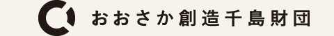

<!DOCTYPE html>
<html>
  <head>
    <meta charset="utf-8">
    <title>7つの船 / 7 Ships</title>
    <!-- <link rel="stylesheet" type="text/css" href="./index.css"> -->
    <meta name="copyright" content="7つの船2016実行委員会">
    <meta name="description" content="平成28年12月1(木) - 4(日)　12月9(金) - 11(日)　/　各日２回">
    <meta name="keyword" content="梅田哲也, さわひらき, 雨宮庸介, Hyslom, 松井美耶子, 5つの船">
    <meta property="og:title" content="7つの船 / 7 Ships">
    <meta property="og:type" content="website">
    <meta property="og:url" content="7-ships.com">
    <meta property="og:image" content="7-ships.com/7ships.jpg">
    <meta property="og:description" content="平成28年12月1(木) - 4(日)　12月9(金) - 11(日)　/　各日2回">
    <meta name="viewport" content="width=device-width, initial-scale=1.0">
  </head>
  <body>
    <div class="docs">
      <iframe width=’640′ height=’800′ frameborder=’0’ src="https://docs.google.com/document/d/1bg6XDKy24m1ULuMnbMey8v7yqGu642_6VbWX_13kCcg/pub?embedded=true"></iframe>
    </div>
    <!--
    <div class="text">
      <div class="text-body">
        <h1 class="hd-level-1">
          <a href="https://vimeo.com/user55786057" target="_blank">7つの船 / 7 Ships</a><br>
        </h1>
        <p class="hd-level-2">
          7つの船 プレイベント<br>
          <i>「生きているのに走馬灯」</i><br>
          このイベントは、昨年11 月に実施された梅田哲也のナイトクルーズ・パフォーマンス作品「5 つの船（夜行編）」の続編として
          今年12月に発表される新作「7つの船」のプレイベントです。「7つの船」には、昨年に引き続きHyslomと松井美耶子が乗船するほか、
          ロンドンを拠点に活動する映像作家の さわひらき 、ベルリン在住のヴィジュアル・アーティスト雨宮庸介が新たに参加します。
          12月の出航をひかえ、参加アーティストが一晩だけ大阪に集結。乗船プランや個々の作品についての話に加え、
          雨宮庸介と梅田哲也のふたりが無自覚にやり取りしてきた妄想の往復書簡を下敷きに、
          生きながら見てしまう走馬灯のような体験を紐解いてゆくための、オールナイト・トーク・クルーズです。<br><br>
          日時：9/21(水) 24時過ぎ〜始発くらいまで<br>
          場所：大阪・本町
          <a href="http://hopken.com/" target="_blank">HOP KEN</a><br>
          料金：1000円(1ドリンク付)<br>
          登壇者：雨宮庸介、梅田哲也、さわひらき<br>
          朗読：松井美耶子<br>
          司会：大島賛都(キュレーター)<br>
          副音声：西光祐輔、ヌケメ<br><br>
        </p>
        <p class="main-event">
          7つの船<br>
          梅田哲也、さわひらき、雨宮庸介、Hyslom、松井美耶子<br>
          日程：平成28年12月1(木) - 4(日)　12月9(金) - 11(日)<br><br>
          主催：7つの船実行委員会<br>
          協力：大正区<br>
          助成：大阪市、おおさか創造千島財団、アーツサポート関西<br>
        </p>
        <div class="credits">
            <p>
              <a href="http://www.chishimatochi.info/found/" target="_blank">
                </a>
            </p>
        </div>
      </div>
    </div>
    -->
  </body>
</html>
